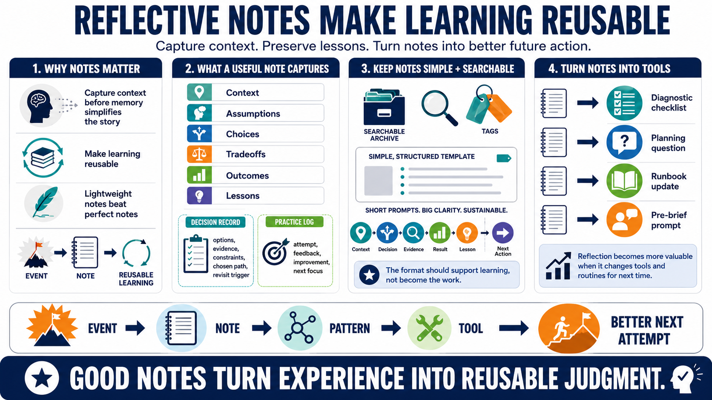

Reflective Journals, Decision Records, and Learning Notes
Connecting to LMS... Progress: in progress

Narration
Reflective notes make learning reusable. Personal learning journals, decision records, practice logs, incident notes, and project retrospectives all serve the same broad purpose: they capture context before memory turns the event into a simplified story. The best notes are useful because they are specific enough to review and lightweight enough to actually keep using.
A useful note captures context, assumptions, choices, tradeoffs, outcomes, and lessons. For a decision record, that might include the options considered, the evidence available, the constraints, the chosen path, and what would cause the decision to be revisited. For a practice log, it might include what was attempted, what feedback appeared, what improved, and what needs focused practice next.
Notes should be searchable and easy to apply. Long essays can be valuable, but many teams and individuals sustain reflection better with short structured prompts. A recurring format such as context, decision, evidence, result, lesson, and next action can make notes easier to write and easier to scan later. The format should support learning, not become the work itself.
The strongest reflective notes become patterns, checklists, examples, and future prompts. A debugging lesson may become a diagnostic checklist. A project lesson may become a planning question. An incident lesson may become a runbook update. A communication lesson may become a pre-brief prompt. Reflection becomes more valuable when it changes the tools and routines people will use next time.